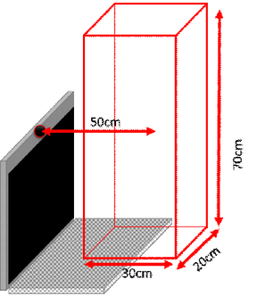

Tracking Trigger and Rules |
Top Previous Next |
|
Tracking Trigger and Trigger Values The Tracking Trigger indicates that the tracking source (hand/joint) has been detected and moved from the last position.
Tracking Trigger Rules You can use the following rules with the Tracking Trigger:
The rule fires whenever a blob has moved. You can set the maximum distance (in cm) for the blob detection and the point to track on the blob.
The rule fires whenever the selected landmark has moved. You can configure the tracked landmark. You can additionally define the Real World Box, which sets the boundaries in which the selected face is tracked in the real world. For example, if the Real World Box center is set to X = 0, Y = 0, Z = 50, the center of this box is set to 50 centimeters away from the camera and on its axis. If the Real World Box dimensions are set to X = 20, Y = 70, Z = 30, the bounding box’s size is 20cm in each direction, as illustrated in Figure 93.  Figure 93 The Real World Box for the Face Tracking Rule
The rule fires whenever the selected joint of the selected hand’s has moved. You can configure the tracked hand and the tracked joint by choosing from the drop-down lists. Similarly to the Face Tracking rule, you can define the Real World Box for hand tracking.
The rule fires whenever the selected 2D object has moved. You can configure the 2D reference image that is being tracked. Similarly to the Hand Tracking rule, you can configure the Real World Box.
|